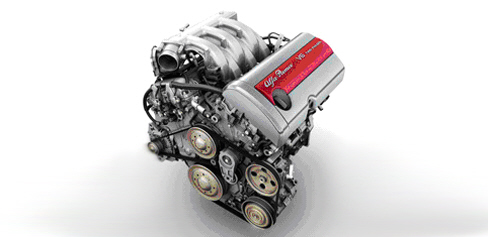

INTRODUCTION - ENGINE
- Path
- Descriptions > 10 ENGINE > INTRODUCTION - ENGINE
- Kind
- system description
- Applies to
- engines: 3.2 JTS; all production periods
- Interactive page
- https://sloeber94.github.io/elrnDB-aBrrSpdr/en/#/946001152
Applies to: engines: 3.2 JTS; all production periods
Technical specifications

The new 6 cylinder engine represents a radical change from the V6 Alfa Romeo engine and is the natural development.
Currently it is only available in one 3200 cc version with direct petrol injection and has the following design aims:
- Maximum power of 260 CV
- Maximum torque of 322 Nm
- Specific power of 60kW/l and specific torque of 100 Nm/l
- Significant increase in torque at low speed through improved supply fluidity compared with previous 3200 V6 engine
- Maximum rotation speed 7200 rpm
- Reduced maintenance (hydraulic tappets, chain timing drive)
- Reduced weight (aluminium head and crankcase)
- EURO 4 exhaust emissions
The new 6 cylinder engine, continuing the strategy already begun on the 4 cylinder engines, has a Bosch Motronic MED 7.6.2 JTS (Jet Thrust Stoichiometric) direct injection system.
JTS is an original Alfa Romeo concept of direct injection of the fuel into the combustion chamber at an optimum stoichiometric mixture strength for performance which, at the same time, allows good fuel consumption and the Euro 4 emission limits to be met.
The aluminium cylinder heads have 4 valves per cylinder, 2 camshafts per bank equipped with a continuous phase transformer (inlet and exhaust) already used on 4 cylinder Alfa Romeo engines and now applied for the first time to 6 cylinder engines.
The control of the valves is produced by a low mechanical dissipation roller finger system and hydraulic recovery of the tappet clearance.
The camshafts are driven by means of a primary chain that sends the power to the heads via two secondary chains.
The high pressure fuel pump for the direct injection system is fitted on the head and controlled by a camshaft and, by means of a built-in pressure regulator, it guarantees a fuel pressure of 120 bar for the injectors.
Main technical specifications
- Dual overhead camshaft with low friction control
- Direct fuel injection
- Inlet and exhaust dual continuous phase transformer
- Light aluminium alloy cylinder head and cylinder block/crankcase
- Hydraulic tappets - Maintenance-free timing drive chain
- Poly-V belt with automatic tensioner for engine accessories drive
- Electronically activated throttle
- Individual ignition coils - Low specific consumption and low emissions
- EOBD
- 4 Lambda sensors for emission control
- Dual detonation sensor
- Performance type exhaust manifold with built-in pre-catalyzers
- Euro 4 emissions level